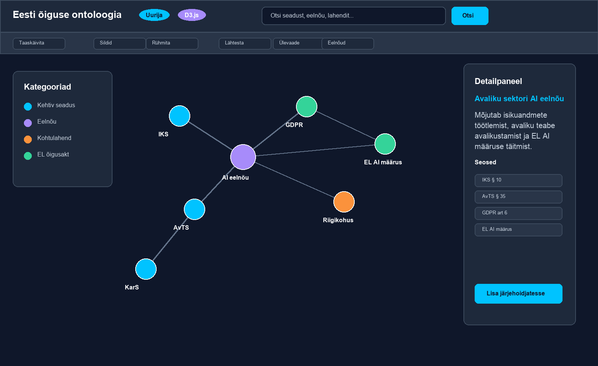
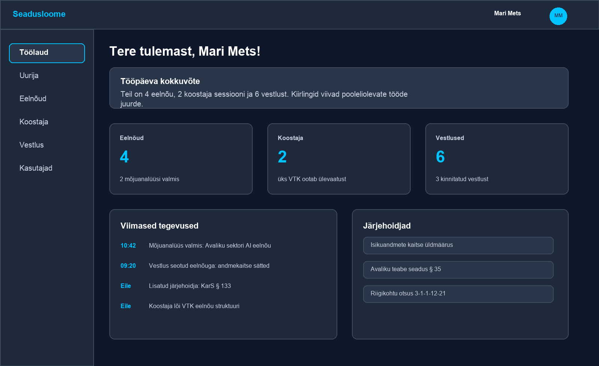

UI planning report
Move Seadusloome from graph-first to workbench-first
The current authenticated root sends users directly into Õiguskaart. That makes the product feel like a graph tool, while the higher-value workflows are analysis, draft review, advisory help, and daily legal work triage.
UI logic review
Executive Recommendation
Dashboard
Change authenticated / from Õiguskaart to /dashboard. Keep Õiguskaart as an evidence and relationship view that opens from a draft, analysis result, search, or advisory answer with context already applied.
The Explorer should not be the main product surface. It is useful when the user already knows what legal object they want to inspect. It is weak as a daily starting point because it asks officials to begin with a visualization instead of a legal question, draft, risk, task, or recommendation.
/auth/login; authenticated users go to /dashboard. Dashboard then routes them into Analüüsikeskus, Eelnõud, Koostaja, Nõustaja, or Õiguskaart based on the work item.


What Is Happening Now
Root route is graph-first
In app/main.py, authenticated / currently returns explorer_page(req). That makes the graph the default product entry point.
Explorer has a separate shell
app/explorer/pages.py builds a custom Html/Body page and local navigation instead of using the standard PageShell.
Global nav already exists
app/ui/layout/sidebar.py already defines the broader workbench nav: Töölaud, Analüüsikeskus, Eelnõud, Õiguskaart, Koostaja, Nõustaja, and admin items.
Note: the live URL was login-gated during this review, so the authenticated screenshots come from the repository's existing user-manual assets and the UI logic is verified from local source.
Why Explorer Is Weak As Home
| Problem | User impact | Better behavior |
|---|---|---|
| It starts with the data structure | Officials have to translate a legal task into graph exploration. | Start from daily legal work: drafts, risks, analyses, review tasks, and recent work. |
| It lacks a clear next action | A graph can show relationships, but it does not tell the user what needs attention. | Dashboard cards should show "continue drafting", "review high-risk finding", "analysis changed", and "ask advisor". |
| Graph usefulness depends on context | The graph is useful after selecting a provision, draft, EU act, or court decision; it is less useful cold. | Open Õiguskaart with ?focus=, ?draft=, or ?search= from other workflows. |
| Custom navigation creates inconsistency | Explorer feels like a separate app and users lose the stable sidebar/topbar model. | Use the shared app shell or recreate it exactly, with Õiguskaart active in the same sidebar. |
Current Flow
Proposed Flow
Recommended Navigation Model
| Area | Role in product | Home priority |
|---|---|---|
| Töölaud | Daily queue: next actions, high-risk findings, stale analyses, active drafts, recent exports, bookmarks. | Default authenticated root. |
| Analüüsikeskus | Main place to start legal questions such as norm impact chains and EU transposition checks. | Primary dashboard CTA and top-level nav item. |
| Eelnõud | Document workspace for uploads, versions, impact reports, retention, export, and deletion. | Primary dashboard CTA when draft work exists. |
| Õiguskaart | Evidence map for relationships, provenance, timeline, and graph inspection. | Secondary: opened from context or direct search. |
| Koostaja | Drafting workflow, preferably seeded from an analysis or uploaded draft. | Primary when a user has active drafting sessions. |
| Nõustaja | Legal advisory conversation, also available from report rows and findings. | Contextual and top-level fallback. |
Explorer Menu Fix
The Explorer should use one of two implementation paths. The first is preferable because it removes duplicated navigation logic.
Preferred: PageShell-based Õiguskaart
Render Õiguskaart inside the shared PageShell with active_nav="/explorer". The sidebar and topbar come from the same components as the rest of the app. The graph canvas becomes the page content area.
- One source of truth for nav labels and role filtering.
- Consistent active state, user menu, notifications, skip link, and layout landmarks.
- Explorer-specific controls become a toolbar, not global navigation.
Fallback: Visual parity shell
If the full PageShell constrains the D3 canvas too much, keep a custom body but import the same navigation data and match the same sidebar/topbar dimensions, colors, icons, and active states.
- No hard-coded Explorer nav list.
- Use real anchors for app navigation.
- Use
aria-label="Õiguskaardi tööriistad"for graph controls.
Target Õiguskaart Layout
Make Õiguskaart More Useful
Open with context by default
Treat direct, blank graph entry as the exception. Most links into Õiguskaart should include ?focus=, ?draft=, ?search=, or an analysis id so the user sees a relevant subgraph immediately.
Replace cold graph start with legal starting points
If there is no context, show a compact start panel: search a law/provision, open recent bookmarks, inspect recent high-risk findings, or start Normi mõjuahel in Analüüsikeskus. Load the broad graph only after a choice.
Turn graph detail into evidence and actions
The detail panel should show source, date/version, relation type in legal language, why it matters, and actions: Küsi nõustajalt, Ava analüüsikeskuses, Lisa märkus, Lisa järjehoidja.
Use presets instead of graph jargon
Prefer legal view presets such as "Kehtiv õigus", "Eelnõu mõjud", "EL seosed", "Kohtupraktika", and "Ajalugu". Keep simulation controls under Vaate seaded.
Implementation Plan
| Phase | Change | Files likely touched | Validation |
|---|---|---|---|
| 1 | Change authenticated root from Explorer to Dashboard. | app/main.py, dashboard auth tests. |
GET / unauthenticated still redirects to login; authenticated user lands on /dashboard or receives a 303 to it. |
| 2 | Unify Explorer navigation with shared app shell. | app/explorer/pages.py, app/static/css/explorer.css, possibly app/ui/layout/page_shell.py. |
Õiguskaart shows same sidebar/topbar model, active nav state, user menu, and landmarks as other pages. |
| 3 | Move graph actions into an Explorer toolbar. | app/explorer/pages.py, app/static/js/explorer.js, explorer CSS. |
Toolbar contains search, timeline, view presets, and settings; no duplicated global nav in the graph toolbar. |
| 4 | Add contextual empty state and stronger deep links. | Explorer page, analysis result links, draft detail/report links, chat seed links. | Opening from a report focuses the entity or draft; opening blank shows useful legal starting points. |
| 5 | Responsive QA and accessibility pass. | Explorer CSS/tests. | Desktop and mobile screenshots show no overlap; keyboard can reach search, toolbar, graph controls, and detail panel. |
Acceptance Criteria
Navigation
- Authenticated root no longer opens a blank graph as the first screen.
- All primary sections use the same labels and ordering in topbar/sidebar.
- Õiguskaart has the same active nav treatment as other pages.
- App navigation links are anchors with real
hrefvalues.
Explorer usefulness
- Blank Õiguskaart has a useful search/start state.
- Analysis and draft pages can open Õiguskaart with context already applied.
- The detail panel explains why a relation matters and offers next actions.
- Mobile layout keeps search, controls, graph, and detail panel usable without overlap.
Decision Summary
| Decision | Recommendation | Reason |
|---|---|---|
| Main view | Use Töölaud / /dashboard. |
It can represent daily legal work and route users to the right tool. |
| Explorer role | Reframe as Õiguskaart, a supporting evidence map. |
The graph is valuable after context is known, not as the first decision surface. |
| Explorer menu | Use the shared app shell or an exact visual/navigation equivalent. | One navigation system lowers cognitive load and maintenance cost. |
| Graph controls | Keep them in a local toolbar with legal-language presets. | Users need legal scope controls, not simulation vocabulary. |